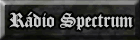

Bem-vindo a Rádio do site Spectrum!!!
Através desse espaço, abrimos
um canal direto para que nossos visitantes possam conhecer
novas bandas, ouvir suas bandas preferidas, e acima de
tudo, ouvir uma programação diferente e
de qualidade, mesclando vários estilos de rock
e metal.
Para acessar a rádio, clique no
botão abaixo:

Dicas:
Caso tenha algum bloqueador de pop-up em seu navegador,
desabilite-o para que a janela da rádio abra corretamente.
Caso não consiga ouvir as músicas
por muito tempo, ou ocorra interrupções
esporádicas, tente configurar sua conexão
de acesso através do botão "Alterar
Ligação" e escolha a conexão
adequada de acesso a internet que é utilizada por
seu computador.
|